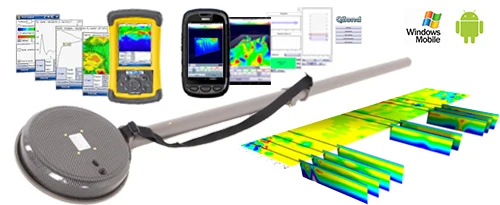
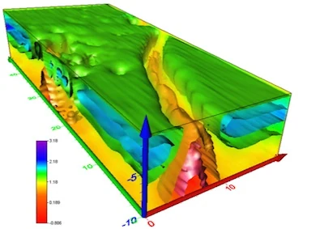
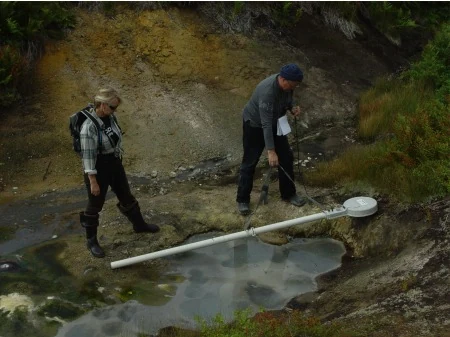
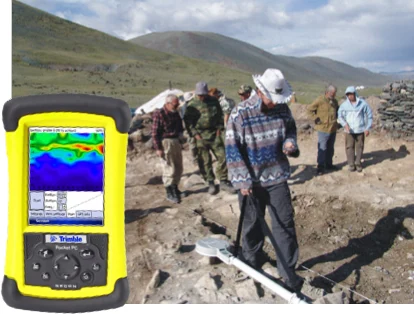
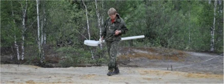
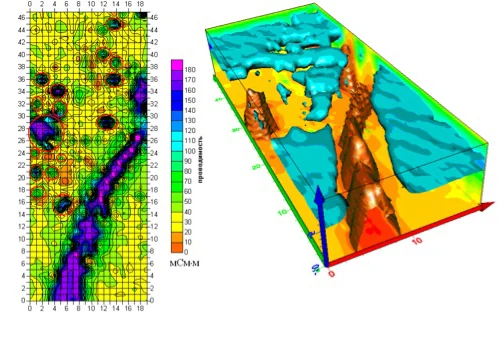
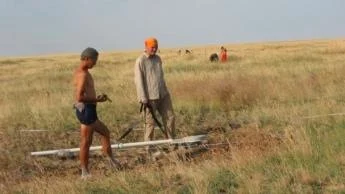

Описание
АЭМП 14 – финальная версия трехкатушечной индукционной системы для электромагнитного профилирования.
Реализованная в аппаратуре схема позволяет измерять распределение кажущегося удельного электрического сопротивления в грунте на глубине до 10 м. Наилучшие результаты прибор показывает в проводящих средах. Также хорошей мишенью являются более проводящие объекты (тоннели, бункеры с увлажненными стенами, трубы и т.д.) в менее проводящем грунте.
Многочастотный комплекс АЭМП-14 позволяет вести профилирование на любом наборе из 14 фиксированных частот в диапазоне 2.5 – 250 кГц, в том числе с автоматической привязкой точки измерения к глобальным координатам.
Простота в управлении позволяет работать с аппаратурой одному человеку. Результаты измерения АЭМП-14 визуализируются в реальном времени на экране карманного компьютера, данные и управляющие сигналы передаются по протоколу BlueTooth. По окончании работы данные загружаются в персональный компьютер для последующей обработки и визуализации результата в виде карт или профильных кривых. В зависимости от количества используемых частот скорость съемки прибором с плотностью 2 м по профилю может составлять от 2 до 30 км/час.
Основные особенности:
– усовершенствованное конусное соединение обеспечивающее точную и надежную посадку антенного блока;
– оптимизированная калибровка обеспечивает проведение профилирования на 14-ти частотах;
– упрощенный функционал программы управления – визуализация карт, а также профильных кривых.

Задачи решаемые с помощью АЭМП-14:
Гидрогеология
Сезонный мониторинг динамики изменения св-в грунтовых вод
Поиск и локализация грунтовых вод
Картирования грунтовых вод и их загрязнений
Поиск источников соленой и пресной воды
Агрономия
Оценка концентрации минеральных удобрений
Контроль качества и эффективности проведения различных работ
Оценка земель сельскохозяйственного назначения
Оценка фертильности почвы
Сезонный мониторинг динамики изменения св-в почвы
Исследования состояния грунта, определения зон трещиноватости, обводнения
Коммунальное хозяйство
Мониторинг состояния поддорожного пространства
Мониторинг состояний подземных коммуникаций
Поиск и локализации источников утечки воды в подземных трубопроводах
Определения местоположения подземных коммуникаций, сооружений и пр.
Инженерная геология
инженерно-геологические изыскания
инженерно-гидрологические изыскания
инженерно-экологические изыскания
Археология
Локализация археологических объектов
Мониторинг состояния скрытых под грунтом памятников архитектуры
Детальное исследование археологических объектов
Экология
Агроэкология
Анализ влияния техногенных факторов
Экологический надзор
Мониторинг потенциально опасных объектов
Управление экологическими рисками
Экологическая оценка загрязнения почвы горюче-смазочными материалами
Обнаружение и локализация захоронений промышленных отбросов любого химического состава
Мелиорация
Контроль эффективности проведения работ
Мониторинг динамики распространения грунтовых вод
Безопасность
Поиск криминальных схронов, подкопов, тоннелей
Обнаружение врезок в магистральные трубопроводы
Поиск источника утечки и оценка объема утечки из магистральных трубопроводов нефтепродуктов

Производитель КБ “Электрометрии”
Технические характеристики
|
Общие параметры – Трехкатушечный индукционный зонд; – Частотный диапазон: 2,5-250 кГц (14 частот); – Время измерения: 0,2-2 с (в зависимости от количества выбранных частот); – Мощность генератора: 90 Вт; – Чувствительность приемника: 1 мВ; – Габариты в собранном состоянии: 275х30х10 см – Время работы батареи: 12 часов; – Вес прибора: 7 кг. |
Комплектация и цены
Загрузки
QZond 4.4 (Android) |
|
iiSystem 4.04 (Windows PC) |
|
Инструкция по эксплуатации QZond |
|
Инструкция по эксплуатации “АЭМП-14” (EMSControl) |
|
Техническая документация “АЭМП-14” |
|
«EmsControl» программное обеспечение для сбора данных на карманном ПК – Версия WEH |
|
«EmsControl» программное обеспечение для сбора данных на карманном ПК – Версия VGA WM6.5.3 |
|
«EmsControl» программное обеспечение для сбора данных на карманном ПК – Версия WVGA WM6.5.3 |
|
«iSystem» обработка и визуализация данных на Windows ПК |
|
ISystem – обеспечивает считывание данных с аппаратуры АЭМП-14, их просмотр, редакцию и печать, обработку и автоматическую визуализацию в графическом пакете Surfer версии 7.0 и выше.
Перед установкой новой версии ПО – необходимо удалить старую.
EmsControl – разработана для Windows Mobile совместимых устройств (КПК, коммуникаторы, смартфоны и пр.) и предназначена для сбора данных с использованием аппаратуры АЭМП-14, обеспечивает первичную визуализацию данных в виде карт, разрезов и кривых распределения сигнала, имеет простой и удобный интерфейс, позволяет использовать Bluetooth, встроенные и встраиваемые (Compact Flash) приемники GPS.
Применение
– инженерная геология;
– агрономия;
– экология;
– археология;
– коммунальное хозяйство;
– мелиорация;
– гидрогеология;
– специальные задачи.
Галерея




Оборудование, комплектация и консультации: связаться с КБ Электрометрии.